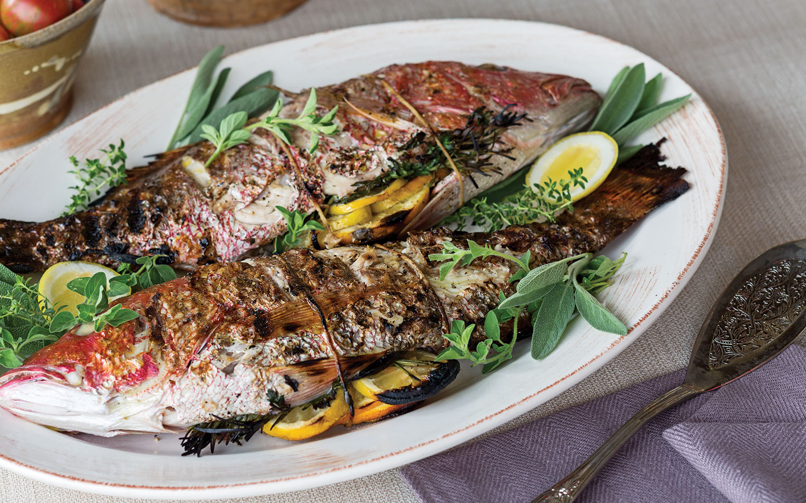

Whole Grilled Fish

The whole grilled fish is both rustic and beautiful, there are no frills about a whole fish ready to be eaten on a plate. This dish is simple, served with lemon to squeeze over the fish.
For the Fish
- 1 White Fleshed Fish, Gutted and Scaled (About 2 Pounds)
- Kosher Salt
- 3 Bay Leaves
- 1 Lemon; 1 Half Cut Into Wedges, 1 Half Left Whole
- Butcher's Twine
Make the Fish
- Prepare a medium hot charcoal fire or preheat a gas grill
- Season the inside and the outside of the fish with salt
- Stuff the fish with the bay leaves and lemon wedges
- Tie butcher's twine around the gills and the base of the tail to secure the bay and lemon
- Grill the fish 8 minutes per side, until the fish flakes...do not overcook
- Remove and discard the butcher's twinevand remove the bay and lemon
- Transfer the fish to a large seving platter and squeeze the whole lemon over the fish. Be carefule to catch any lemon seeds.
- Serve Immediately